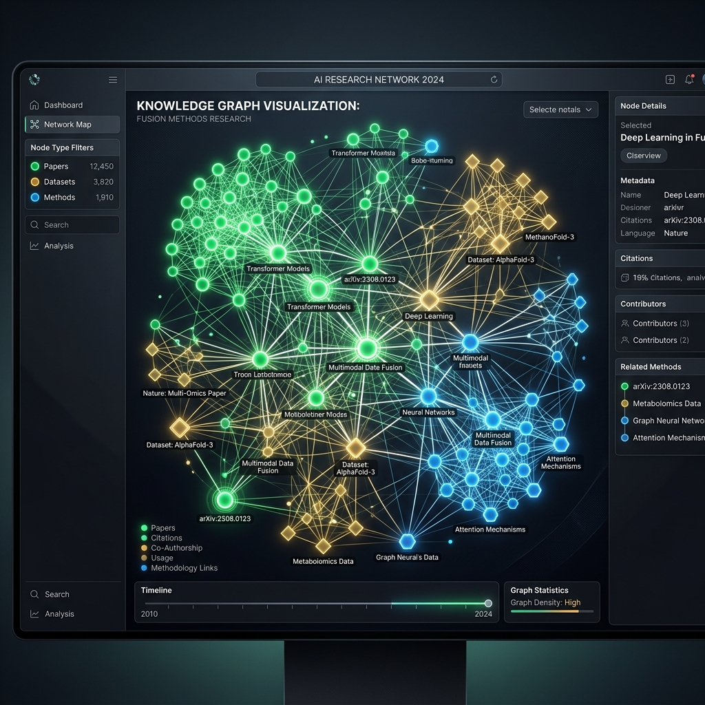

An AI-powered search assistant utilizing GraphRAG (Neo4j & Gemini) to route queries, translate natural language into Cypher queries, and summarize data fusion literature.

Academic literature search can be challenging when trying to connect research papers, the specific datasets they use, and the data fusion methods applied. Typical semantic search databases often miss highly structured connections and dependencies.
I built the Research Knowledge Graph Assistant to model academic literature in a structured format and provide a conversational interface over it. The graph connects Paper, Dataset, and FusionMethod nodes, enabling users to ask complex questions in plain English rather than formulating database queries.
app.py): Classifies user inputs using Gemini as either conversational ("GENERAL") or database queries ("DATABASE") to optimize query latency.import_data.py): Ingests tabular CSVs of papers, datasets, and methods, merging them into Neo4j with structured relations such as USES_METHOD and APPLIED_TO.main.py): Leverages the neo4j-graphrag library to translate natural language inquiries into Cypher queries based on the database schema and few-shot examples.Designed a structured schema linking papers, datasets, and fusion methods. This allows multi-hop relational queries such as finding datasets commonly fused together or identifying specific uncertainty parameters reported by research papers.
Translates complex graph searches dynamically from natural language. By feeding the database schema and few-shot examples to Gemini, the engine dynamically translates queries into optimized Cypher matching node labels, properties, and relationships.
Implements an AI router that detects user intent. Casual conversation is answered directly by Gemini, while factual queries are automatically translated into Cypher queries, executed on Neo4j, and summarized back to the user with graph-sourced context.
Explore the importer scripts, text-to-cypher prompts, and Flask app configuration directly in the GitHub repository.